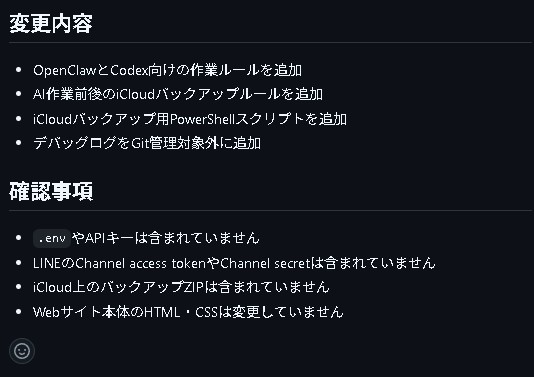
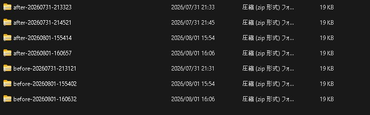

解決したかった課題
AIへ大きな権限を与えると、正式版の誤更新、必要なファイルの削除、秘密情報の流出、誤変更の本番反映などが起こる可能性があります。
BACKGROUND
LINEからWindows PC上のAIへ、会社Webサイトの確認や修正を依頼できる仕組みです。単にLINEとAIを接続するだけでなく、誤った変更から復旧できる構成と、人間による承認フローを組み合わせました。
AIへ大きな権限を与えると、正式版の誤更新、必要なファイルの削除、秘密情報の流出、誤変更の本番反映などが起こる可能性があります。
AIの作業場所と正式版を分離し、認証、権限制限、変更履歴、バックアップ、人間による最終確認を組み合わせてリスクを抑えています。
SYSTEM FLOW
外出先から依頼しても、変更がそのまま正式版へ入ることはありません。
SAFETY
AIは正式版であるmainブランチを直接変更せず、作業用ブランチでコードを修正します。
作業の前後にプロジェクト全体を保存し、問題が発生した場合に元の状態へ戻せるようにします。
変更差分をGitHub上で人間が確認し、問題がないと判断された変更だけを正式版へ反映します。
APIキーや認証情報をGitHubへ保存せず、承認されたLINEアカウントからの指示だけを受け付けます。
ACTUAL SCREENS
AIの作業結果と安全確認を人間が確認でき、作業前後の状態も自動的に保存されます。


TECHNOLOGY
APPLICATIONS
社内資料の検索・作成、営業資料の下書き、マニュアル検索、定型データ処理など、既存業務とAIを安全に接続する仕組みへ展開できます。